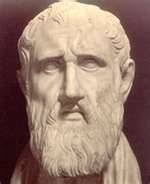

EN APARIENCIA
Algo que desconcierta
Una paradoja es un razonamiento o una situación que parece llevar a una contradicción, aunque sus pasos parezcan razonables.
Una paradoja introductoria al cálculo
Una carrera sencilla que esconde una pregunta enorme sobre el infinito. Descubre la paradoja de Zenón y cómo el cálculo nos ayuda a comprenderla.
Una idea de hace más de 2.000 años que todavía nos hace pensar.
01 · Una pregunta filosófica
A veces, pensar con cuidado nos lleva a conclusiones que parecen contradecir lo que vemos.
Una paradoja es un razonamiento o una situación que parece llevar a una contradicción, aunque sus pasos parezcan razonables.
Confiamos en que el movimiento es sencillo: si alguien corre más rápido, debería alcanzar a quien va más lento.
Las paradojas nos obligan a revisar nuestras ideas y a distinguir entre una impresión y una demostración.

02 · El filósofo detrás de la paradoja
Un filósofo de la antigua Grecia que creó argumentos difíciles de responder para cuestionar cómo entendemos el movimiento y la realidad.
Vivió hace unos 2.500 años. Las fechas exactas de su vida no se conocen con certeza.
Una ciudad griega situada en el sur de la península itálica (en la actual Italia).
Zenón usó sus paradojas sobre el movimiento y la pluralidad para demostrar las contradicciones lógicas que surgen al aceptar que el mundo cambia y se divide de forma infinita.
No se conoce con certeza el momento ni el lugar exactos en que formuló cada paradoja. Sus argumentos se conservan y conocen principalmente a través de las obras de autores posteriores, como Aristóteles.
03 · El experimento mental
Imagina una carrera. Aquiles es un corredor rapidísimo, pero decide darle a la tortuga una ventaja inicial.
Cuando comienza la carrera, la tortuga ya tiene cierta distancia de ventaja.
Mientras Aquiles recorre esa distancia, la tortuga ha avanzado un poco más.
Aquiles llega al nuevo punto, pero la tortuga vuelve a moverse. Siempre parece quedar una pequeña distancia.
04 · De la paradoja al cálculo
La clave está en distinguir entre dividir un recorrido en infinitas partes y necesitar un tiempo infinito para completarlo.
Permite estudiar el valor al que se acercan las sumas parciales cuando agregamos más etapas. En esta paradoja, cada nueva distancia y cada nuevo tiempo se hacen más pequeños.
Una suma puede tener infinitos términos y, aun así, converger a un resultado finito. Los tiempos de cada etapa forman una serie geométrica.
05 · La explicación matemática completa
Usaremos un ejemplo con números concretos para ver las dos formas de resolver el problema.
La tortuga comienza 20 metros por delante. Aquiles corre a 10 metros por segundo y la tortuga a 2 metros por segundo. Suponemos que las dos velocidades se mantienen constantes.
Aquiles tarda 2 segundos en llegar al punto donde estaba la tortuga al comienzo. Durante ese tiempo, ella avanza 4 metros. Luego Aquiles tarda 0,4 segundos en cubrir esos 4 metros, mientras la tortuga avanza 0,8 metros. El proceso continúa con cantidades cada vez menores.
Primero, Aquiles tarda 2 segundos en llegar al lugar donde estaba la tortuga. Para entonces, la tortuga ha avanzado 4 metros. Aquiles tarda 0,4 segundos en llegar a ese nuevo punto; durante ese tiempo, ella avanza 0,8 metros. Después ocurre lo mismo, pero cada etapa tarda menos que la anterior.
Si sumamos los tiempos etapa por etapa, obtenemos:
¿Notas qué pasa? Cada suma se acerca más a 2,5 segundos. Los tiempos nunca se hacen exactamente cero, pero sí son cada vez más pequeños. Por eso, aunque sumemos infinitas etapas, el total puede acercarse a un número finito.
Como cada término se obtiene multiplicando el anterior por 0,2, usamos la fórmula de la serie geométrica infinita:
¿Qué significa cada elemento?
• (S): Es la suma total o el valor al que converge la serie.
• (a): Es el primer término de la serie (el tiempo de la primera etapa).
• (r): Es la razón de la serie (el factor por el que se multiplica cada término para obtener el siguiente).
Para que una serie geométrica infinita sume un número finito (pueda converger), el valor absoluto de la razón debe ser menor que 1.
También podemos resolverlo sin dividir la carrera en etapas. En lugar de seguir cada punto que alcanza Aquiles, escribimos la posición de cada corredor según el tiempo que ha pasado.
Aquiles parte desde el metro 0 y corre a 10 metros por segundo. Por eso, después de t segundos, habrá recorrido 10t metros:
La tortuga empieza 20 metros adelante y avanza a 2 metros por segundo. Su posición será la ventaja inicial más lo que recorre durante ese tiempo:
Cuando se encuentran, los dos están en la misma posición. Por eso igualamos las expresiones:
Esto quiere decir que Aquiles alcanza a la tortuga después de 2,5 segundos. Para saber en qué lugar ocurre, reemplazamos el tiempo en la posición de Aquiles:
Así comprobamos que se encuentran a 25 metros del punto de partida de Aquiles.
06 · Recurso audiovisual
El botón de abajo te llevará a una lista de reproducción de YouTube que te ayudará a entender mejor la paradoja y su relación con el cálculo. Puedes volver aquí cuando quieras repasar las ideas y las ecuaciones.
Fíjate en la ventaja inicial que tiene la tortuga, en cómo Aquiles va llegando a los lugares por los que ella ya pasó y en por qué cada etapa tarda menos que la anterior.
Recuerda que, en nuestro ejemplo, Aquiles alcanza a la tortuga en 2,5 segundos y ambos están a 25 metros del punto de partida de Aquiles.
El botón de abajo te llevará a una lista de reproducción de YouTube que dejará todo más claro. Puedes ir viendo los videos a tu ritmo y después volver a esta página si quieres revisar algún punto.
▶ Ver la lista de reproducciónLa lista se abrirá en otra pestaña para que no pierdas esta página.
07 · Exploremos
Ahora que conocemos la paradoja, te invito a explorar la carrera de Aquiles y la tortuga de una forma más visual.
Ajusta qué tan rápido corren Aquiles y la tortuga y mira cómo cambia el resultado.
Dale a la tortuga más o menos metros de ventaja y observa cuánto tarda en ser alcanzada.
Verifica que el encuentro ocurre en un tiempo finito, como vimos con la serie y las ecuaciones.
Pasa a la simulación interactiva y comprueba con tus propios números que infinitas etapas no significan un tiempo infinito.
🏃🏻 Conocer la carrera de Aquiles →08 · Para cerrar
“Tener infinitas etapas no implica necesitar un tiempo infinito.”
La paradoja nos recuerda que nuestra intuición puede chocar con la lógica. Los límites y las series infinitas permiten estudiar ese choque y explicar cómo Aquiles sí puede alcanzar a la tortuga.